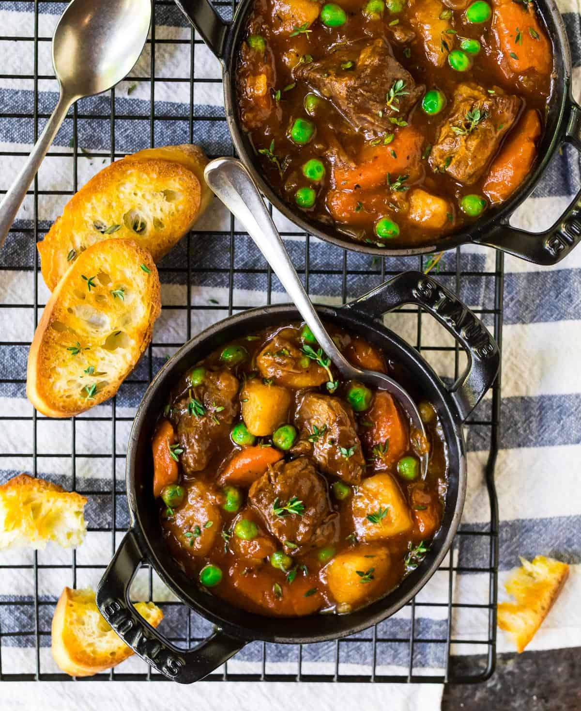

Beef Stew

How to make Instant Pot Beef Stew
Beef stew is one of the best dish to make on a chilly day.
If you love cozy, hearty, and nutritious recipes that will please
everyone at your table, then this instant pot beef stew recipe is the
best thing to cook!
Ingredients
- 2 ponds boneless chuck roast
- 2 tablespoons extra-virgin olive oil divided
- 2 teaspoons kosher salt divided
- 1/2 teaspoon ground black pepper divided
- 1 large yellow onion
- 2 cloves garlic
- 1 pound carrots about 6 medium
- 1 largerusset potato
- 1 can low-sodium beef broth (14.5-ounces)
- 1 tablespoon Worcestershire sauce
- 1 bay leaf
- 1 teaspoon dried thyme
- 1 can no salt added tomato sauce (8 ounces)
- 2 tablespoons cornstarch
- 2 tablespoons water
- 1 1/2 cups fresh or frozen peas no need to thaw
- Fresh parsley or fresh rosemary, optional for serving
Instructions
- Cut the chuck roast into 1 1/2-inch cubes, removing any large, tough pieces of fat or gristle.
- Turn the Instant Pot to SAUTE. Add 1 tablespoon of the oil. Once the oil is hot and shimmering
(a drop of water should sizzle if added to the surface of the pot), add half of the beef, 1 teaspoon
pepper. The cubes should be in a single layer and not too crowded so that they brown nicely. Let the
cubes of beef cook undisturbed for 4 to 5 minutes (resist the urge to peek!), until the bottom of the cubes
divelop a dark-brown crust and come away from the pan easily. Turn and continue searing until dark and brown
all over, about 4 additional minutes. Transfer the seared meat to a clean plate or bowl. Add another 1 tablespoon
of olive oil to the pot. Once hot, add the remaining beef and remaining 1 teaspoon salr and 1/4 pepper.
Sear the remaining beef. If the pan gets too dry, add a bit more oil as needed.
- While the meat browns, dice the yellow onion. Mince the garlic. Peel the carrots and cut them into
1/2-inch-thick diagonal slices.
- Remove the second batch of browned beef to the plate with the first batch. Add the remaining tablespoon of olive
oil and the onion to the Instant Pot. Cook, stirring occasionally, until the onion begins to soften and brown,
about 6 minutes.
- While the onion cooks, scrub and peel the potato and cut it into 3/4-inch chunks. If you haven’t finished cutting
the carrots, do so now.
- Add the garlic to the Instant Pot. Cook, stirring constantly until fragrant, about 30 seconds. Add the beef broth
and use a spoon to scrape the brown bits from the bottom of the pan. Make sure you remove every last bit of stuck-on
food so that you don’t receive a “burn” warning.
- Stir in the carrots, potatoes, Worcestershire sauce, bay leaf, thyme, and the browned beef, along with any meat juices
that have collected on the plate. Pour the tomato sauce on top. Do not stir again.
- Close and seal the Instant Pot. Cook on high pressure for 35 minutes, then allow the pressure to release naturally for
10 minutes. Vent the steam valve to release any remaining pressure, then carefully open the lid. Remove and discard
the bay leaf.
- In a small bowl, whisk together the cornstarch and water to create a slurry. Add to the Instant Pot and stir until
the stew thickens. Add the peas and stir to warm through. Serve hot, sprinkled with fresh parsley.